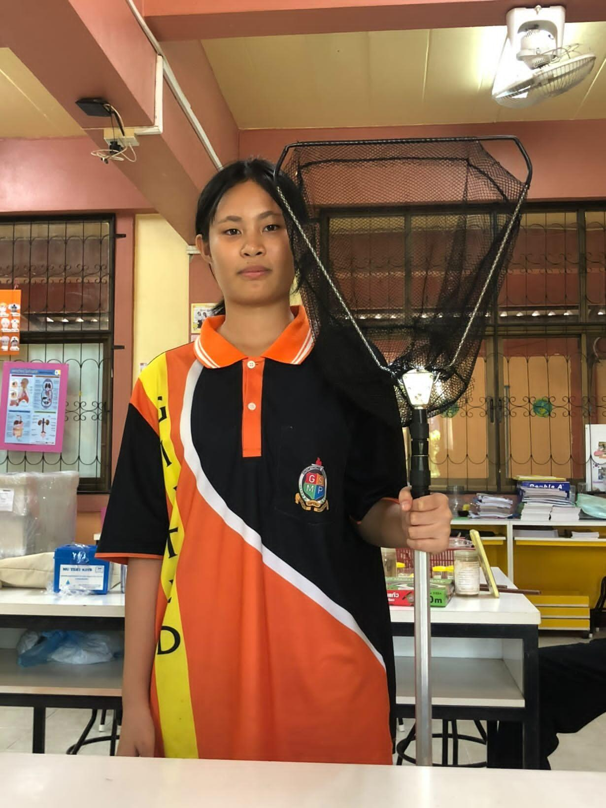

ประวัติส่วนตัว
Portfolio Profile Section 🐚

เด็กหญิงกฤตธีรา มะโนธรรม
นักเรียนชั้น ม.3/2
ข้อมูลทั่วไป
ชื่อเล่น: การ์ตูน
อายุ: 14 ปี
วันเกิด: 20 พฤศจิกายน 2554
จังหวัด: เชียงใหม่
โรงเรียน: โรงเรียนจอมทอง
ระดับชั้น: มัธยมศึกษาปีที่ 3/2
เกี่ยวกับฉัน
สวัสดีค่ะ! หนูเป็นนักเรียนชั้นมัธยมศึกษาปีที่ 3 ที่มีความมุ่งมั่นและสนุกกับการเรียนรู้สิ่งใหม่ๆ อยู่เสมอ หนูมีความสนใจในด้านวิทยาศาสตร์ เทคโนโลยี การเขียนเว็บไซต์ และการสร้างสรรค์ผลงานในรูปแบบใหม่ๆ ในเวลาว่างหนูชอบฝึกฝนทักษะคอมพิวเตอร์ และเข้าร่วมกิจกรรมต่างๆ ของโรงเรียนเพื่อพัฒนาตนเองอยู่เสมอค่ะ 🌊✨